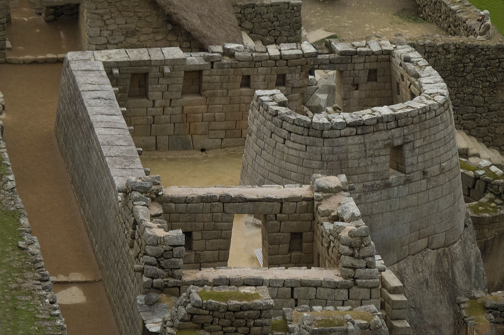
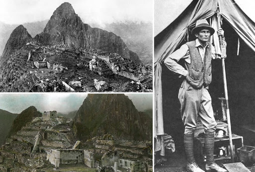
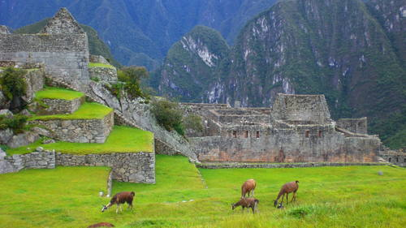
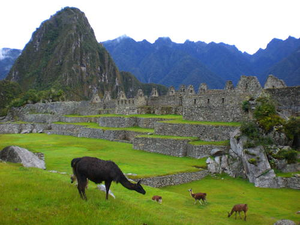
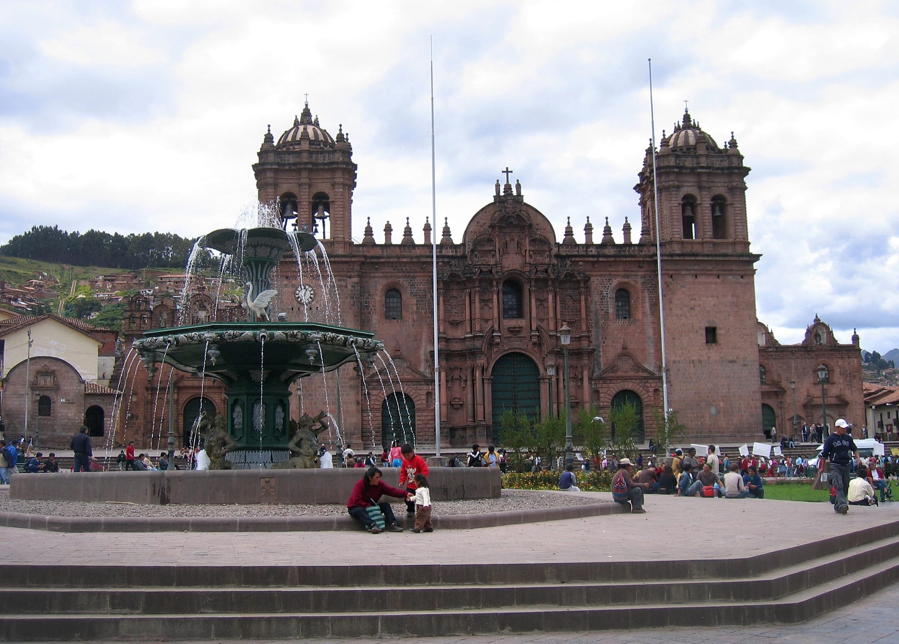

Introduction
Tucked away in the rocky countryside northwest of Cuzco, Peru, Machu Picchu is believed to have been a royal estate or sacred religious site for Inca leaders, whose civilization was virtually wiped out by Spanish invaders in the 16th century. For hundreds of years, until the American archaeologist Hiram Bingham stumbled upon it in 1911, the abandoned citadel’s existence was a secret known only to peasants living in the region. The site stretches over an impressive 5-mile distance, featuring more than 3,000 stone steps that link its many different levels. Today, hundreds of thousands of people tramp through Machu Picchu every year, braving crowds and landslides to see the sun set over its towering stone monuments and marvel at the mysterious splendor of one of the world’s most famous manmade wonders.

Machu Picchu’s Inca Past
Historians believe Machu Picchu was built at the height of the Inca Empire, which dominated western South America in the 15th and 16th centuries. It was abandoned an estimated 100 years after its construction, probably around the time the Spanish began their conquest of the mighty pre-Columbian civilization in the 1530s. There is no evidence that the conquistadors ever attacked or even reached the mountaintop citadel, however; for this reason, some have suggested that the residents’ desertion occurred because of a smallpox epidemic.
Did you know? Machu Picchu is made up of more than 150 buildings ranging from baths and houses to temples and sanctuaries !
Many modern-day archaeologists now believe that Machu Picchu served as a royal estate for Inca emperors and nobles. Others have theorized that it was a religious site, pointing to its proximity to mountains and other geographical features that the Incas held sacred. Dozens of alternate hypotheses have cropped up in the years since Machu Picchu was first unveiled to the world, with scholars variously interpreting it as a prison, a trade hub, a station for testing new crops, a women’s retreat or a city devoted to the coronation of kings, among many examples.
Machu Picchu’s “Discovery”
In the summer of 1911 the American archaeologist Hiram Bingham arrived in Peru with a small team of explorers hoping to find Vilcabamba, the last Inca stronghold to fall to the Spanish. Traveling on foot and by mule, Bingham and his team made their way from Cuzco into the Urubamba Valley, where a local farmer told them of some ruins located at the top of a nearby mountain. The farmer called the mountain Machu Picchu, which translates to “old peak” in the native Quechua language. On July 24, after a tough climb to the mountain’s ridge in cold and drizzly weather, Bingham met a small group of peasants who showed him the rest of the way. Led by an 11-year-old boy, Bingham got his first glimpse of the intricate network of stone terraces marking the entrance to Machu Picchu.
The excited Bingham spread the word about his discovery in a best-selling book, “The Lost City of the Incas,” sending hordes of eager tourists flocking to Peru to follow in his footsteps up the formerly obscure Inca Trail. He also excavated artifacts from Machu Picchu and took them to Yale University for further inspection, igniting a custody dispute that lasted nearly 100 years.
Although he is credited with making Machu Picchu known to the world—indeed, the highway tour buses use to reach it bears his name—it is not certain that Bingham was the first outsider to visit it. There is evidence that missionaries and other explorers reached the site during the 19th and early 20th centuries but were simply less vocal about what they uncovered there.
The Site of Machu Picchu
In the midst of a tropical mountain forest on the eastern slopes of the Peruvian Andes, Machu Picchu’s walls, terraces, stairways and ramps blend seamlessly into its natural setting. The site’s finely crafted stonework, terraced fields and sophisticated irrigation system bear witness to the Inca civilization’s architectural, agricultural and engineering prowess. Its central buildings are prime examples of a masonry technique mastered by the Incas in which stones were cut to fit together without mortar.
Archaeologists have identified several distinct sectors that together comprise the city, including a farming zone, a residential neighborhood, a royal district and a sacred area. Machu Picchu’s most distinct and famous structures include the Temple of the Sun and the Intihuatana stone, a sculpted granite rock that is believed to have functioned as a solar clock or calendar.
 Machu Picchu Today
A UNESCO World Heritage Site since 1983 and designated one of the New Seven Wonders of the World in 2007, Machu Picchu is Peru’s most visited attraction and South America’s most famous ruins, welcoming hundreds of thousands of people a year. Increased tourism, the development of nearby towns and environmental degradation continue to take their toll on the site, which is also home to several endangered species. As a result, the Peruvian government has taken steps to protect the ruins and prevent erosion of the mountainside in recent years.
